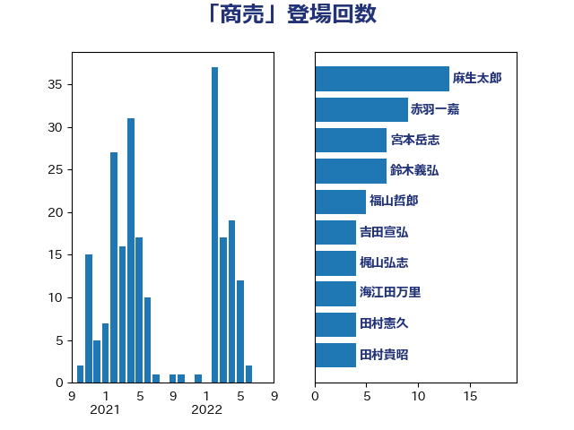

単語「商売」

| 麻生太郎 | 自由民主党 | 13 回 |
| 赤羽一嘉 | 公明党 | 9 回 |
| 宮本岳志 | 日本共産党 | 7 回 |
| 鈴木義弘 | 国民民主党 | 7 回 |
| 福山哲郎 | 立憲民主党 | 5 回 |
| 吉田宣弘 | 公明党 | 4 回 |
| 梶山弘志 | 自由民主党 | 4 回 |
| 海江田万里 | 立憲民主党 | 4 回 |
| 田村憲久 | 自由民主党 | 4 回 |
| 田村貴昭 | 日本共産党 | 4 回 |
| 礒崎哲史 | 国民民主党 | 4 回 |
| 近藤和也 | 立憲民主党 | 4 回 |
| 山井和則 | 立憲民主党 | 3 回 |
| 河野義博 | 公明党 | 3 回 |
| 芳賀道也 | 国民民主党 | 3 回 |
| ながえ孝子 | 無所属 | 2 回 |
| 伊藤孝江 | 公明党 | 2 回 |
| 清水貴之 | 日本維新の会 | 2 回 |
| 玄葉光一郎 | 立憲民主党 | 2 回 |
| 田村まみ | 国民民主党 | 2 回 |
| 畦元将吾 | 自由民主党 | 2 回 |
| 美延映夫 | 日本維新の会 | 2 回 |
| 菅義偉 | 自由民主党 | 2 回 |
| 萩生田光一 | 自由民主党 | 2 回 |
| 落合貴之 | 立憲民主党 | 2 回 |
| 遠藤敬 | 日本維新の会 | 2 回 |
| 須藤元気 | 無所属 | 2 回 |
| 佐々木紀 | 自由民主党 | 1 回 |
| 古川元久 | 国民民主党 | 1 回 |
| 吉田統彦 | 立憲民主党 | 1 回 |
| 吉良よし子 | 日本共産党 | 1 回 |
| 國重徹 | 公明党 | 1 回 |
| 城井崇 | 立憲民主党 | 1 回 |
| 塩川鉄也 | 日本共産党 | 1 回 |
| 大西健介 | 立憲民主党 | 1 回 |
| 安達澄 | 無所属 | 1 回 |
| 小熊慎司 | 立憲民主党 | 1 回 |
| 小野田紀美 | 自由民主党 | 1 回 |
| 山田美樹 | 自由民主党 | 1 回 |
| 岩渕友 | 日本共産党 | 1 回 |
| 川合孝典 | 国民民主党 | 1 回 |
| 平山佐知子 | 無所属 | 1 回 |
| 平木大作 | 公明党 | 1 回 |
| 掘井健智 | 日本維新の会 | 1 回 |
| 日下正喜 | 公明党 | 1 回 |
| 末松信介 | 自由民主党 | 1 回 |
| 東国幹 | 自由民主党 | 1 回 |
| 松沢成文 | 日本維新の会 | 1 回 |
| 枝野幸男 | 立憲民主党 | 1 回 |
| 柳ヶ瀬裕文 | 日本維新の会 | 1 回 |
| 柴田巧 | 日本維新の会 | 1 回 |
| 梅村聡 | 日本維新の会 | 1 回 |
| 森屋隆 | 立憲民主党 | 1 回 |
| 森田俊和 | 立憲民主党 | 1 回 |
| 櫻井充 | 自由民主党 | 1 回 |
| 櫻井周 | 立憲民主党 | 1 回 |
| 浅田均 | 日本維新の会 | 1 回 |
| 渡辺孝一 | 自由民主党 | 1 回 |
| 熊野正士 | 公明党 | 1 回 |
| 牧原秀樹 | 自由民主党 | 1 回 |
| 牧島かれん | 自由民主党 | 1 回 |
| 玉木雄一郎 | 国民民主党 | 1 回 |
| 田嶋要 | 立憲民主党 | 1 回 |
| 石川大我 | 立憲民主党 | 1 回 |
| 石川香織 | 立憲民主党 | 1 回 |
| 福島みずほ | 社会民主党 | 1 回 |
| 福島伸享 | 無所属 | 1 回 |
| 稲富修二 | 立憲民主党 | 1 回 |
| 笠井亮 | 日本共産党 | 1 回 |
| 篠原豪 | 立憲民主党 | 1 回 |
| 舟山康江 | 国民民主党 | 1 回 |
| 藤田文武 | 日本維新の会 | 1 回 |
| 辻元清美 | 立憲民主党 | 1 回 |
| 逢坂誠二 | 立憲民主党 | 1 回 |
| 里見隆治 | 公明党 | 1 回 |
| 長浜博行 | 無所属 | 1 回 |